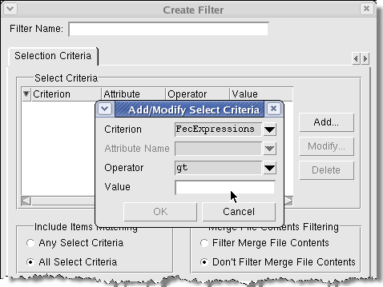

You can set the
display to view only certain items in a UCDB.
Procedure
- From the
context sensitive window menu, select .
This opens the Filter Setup
dialog box.
- Select Create to
create a new filter.
This opens the Create Filter
dialog box.
- Select Add to
specify criteria.
This opens the Add/Modify/Select
Criteria dialog box.
Figure 1. Filtering Displayed
UCDB Data
- Select Criterion and
choose the type of coverage you wish to use as a filter.
- Select Operator.
- Enter the Value of
the item to match.
- Click OK.
The criterion you just entered
appears in the Select Criteria list.
- Enter a Filter
Name and select OK to save that
filter.
- Either select Apply to
filter the UCDB data, or select Done to exit
the dialog box.